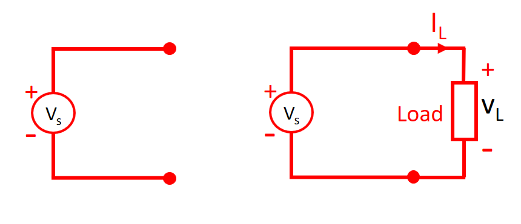
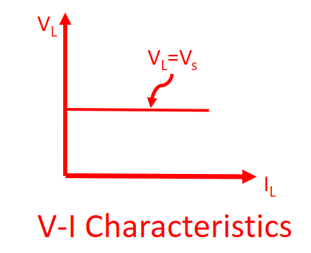
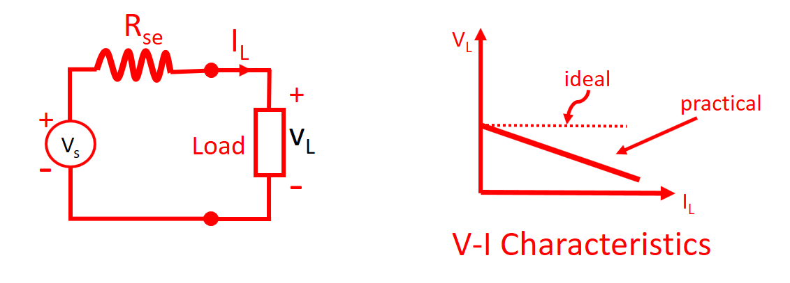
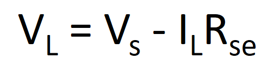
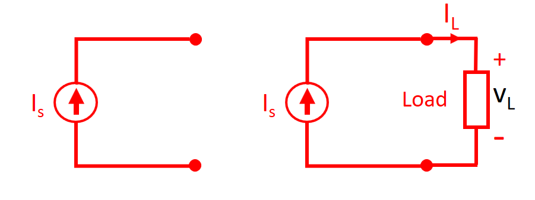
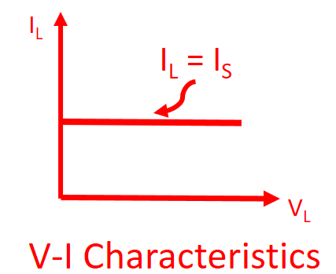
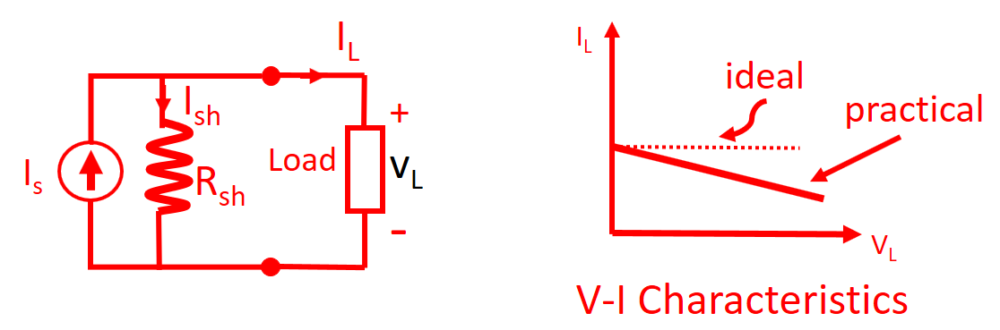
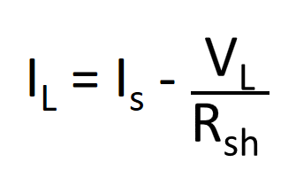

HOME BLOG EBOOKS ABOUT CONTACT SHOP
There are basically 2 types of energy sources: Voltage source & Current source. They can be again classified into ideal & practical sources.
An ideal Voltage source is an Energy source which gives constant Voltage across its terminals irrespective of the current drawn by the load connected to its terminals. At any instant of time, the voltage across the terminals remain the same.

The V-I Characteristics of an ideal voltage source is a straight line as shown.

But it is not possible to make such Voltage sources in practice. Practically, all Voltage sources have a small internal resistance. For analysis purposes, we assume that this internal resistance is in series with the voltage source and is represented by Rse. Because of Rse, the voltage across the terminals decreases slightly with the increase in the current.


Usually, Voltage sources are manufactured keeping the internal resistance to the minimum, such that it acts more or less like an ideal voltage source (till a max load current limit). Batteries are an example of Voltage source.
An ideal current source is a power source that gives constant current, irrespective of the voltage appearing across its terminals


But a practical Current source hardly ever functions this way. In a practical Current source, the current decreases slightly as the Voltage across the load terminals increase. This behavior can be analyzed by considering a high internal resistance, represented by Rsh in parallel with the source.

